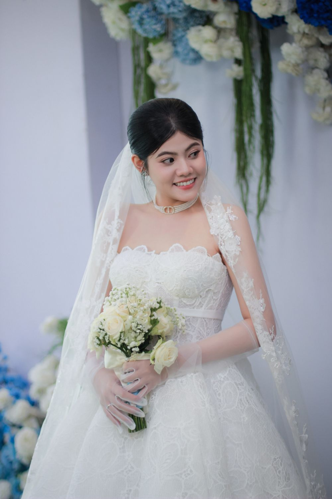
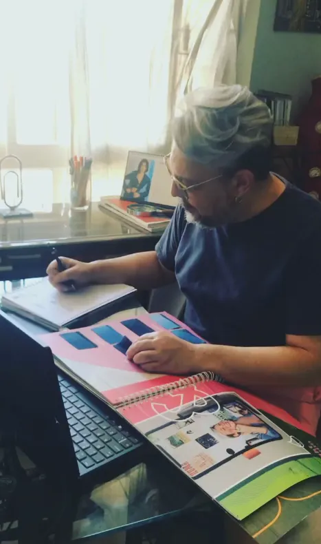
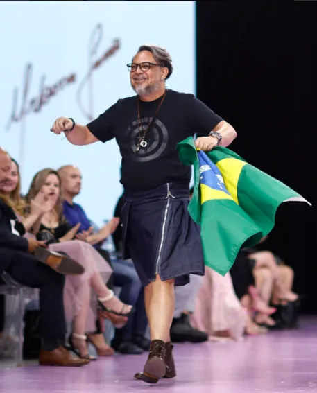
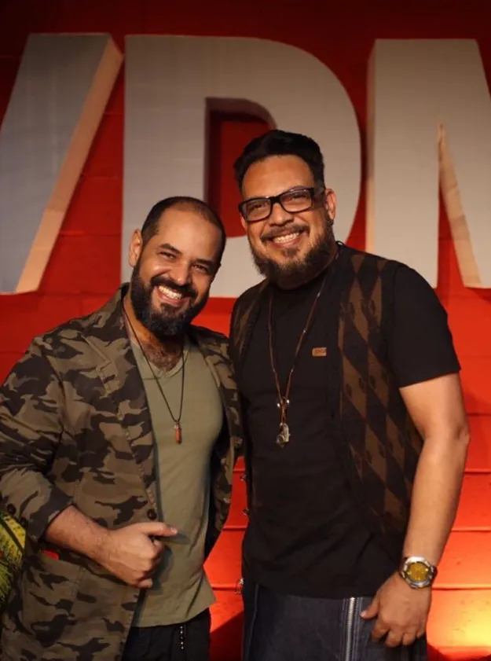

Criação sob medida
Desenvolvimento de peças sob medida, com definição de modelo, tecidos, medidas e ajustes.
Conhecer serviçoEstilista e criação sob medida em Goiânia.
Alta-costura, vestidos e peças desenvolvidas sob medida.
Desenvolvimento de peças sob medida, com definição de modelo, tecidos, medidas e ajustes.
Conhecer serviço
Vestidos e peças sob medida para festas, eventos e outras ocasiões especiais.
Conhecer serviço
Criação de vestidos de noiva sob medida, desenvolvidos desde o conceito até os últimos detalhes da peça.
Conhecer serviço
Modelagem, moulage e desenvolvimento técnico de peças para marcas, estilistas e projetos de moda.
Conhecer serviçoUrbano Junior acompanha diretamente o desenvolvimento de cada peça, do desenho à modelagem, às provas e aos acabamentos.
Urbano Junior é estilista e modelista em Goiânia, com trajetória ligada à criação, alta-costura, modelagem, moulage e desenvolvimento de moda.
Conheça Urbano Junior




URBANO JUNIOR
Conversamos sobre a peça, a ocasião, as referências e as medidas.
Definimos o desenho, os tecidos, os materiais e os detalhes da peça.
Desenvolvemos a modelagem e realizamos as provas para ajustar a peça.
Finalizamos os acabamentos e entregamos a peça após os últimos ajustes.
Atendimento com hora marcada no studio Urbano Junior, em Goiânia.